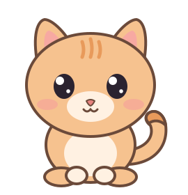
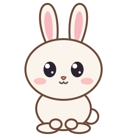
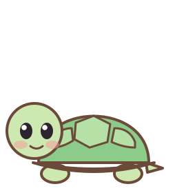
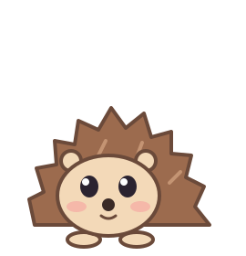
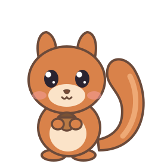
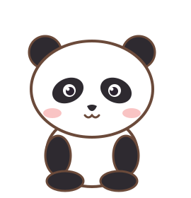
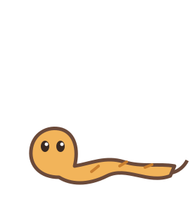

Critters page: the Your own tile comes alive

Kitten
Rabbit Duckling
Duckling

Turtle
Hedgehog
Squirrel Otter
Otter

Panda 6Your own
6Your own
The tile shows your newest critter and how many you have, and opens My critters. With none yet it shows the plus and opens the first-visit page. Homemade critters are set up in My critters, not here, so this strip stays the cast.
Collection: the Homemade shelf links across
HomemadeOpen My critters
MochiYoursShapes

GloopYoursDrawn
PipYoursAnimated

NoodleYoursDrawn
The shelf already exists. It gains the same how-it-was-made badge as My critters, so the words match everywhere, and a link across.
System page: Custom critters moves out
Custom critters
Making, importing and sharing critters now lives in My critters.
Kept for one release as a pointer for anyone who looks in the old place, then removed.